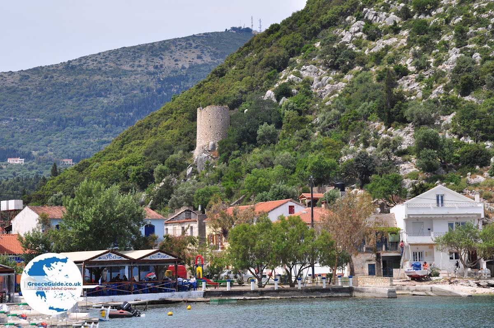

terenceithaque

Frikes est un village côtier construit sur la partie est d'Ithaque, à 19 km de Vathy.
Le village a été construit après le 16e siècle par les habitants de Exogi et de Stavros .
Et maintenant, passons aux plages, en commençant avec Polis bay.
En savoir plus sur Frikes sur Greeka (site en Anglais).
Vous cherchez le contenu d'une plage en particulier? Cliquez ici pour accéder à l'index des plages.
Vous n'êtes pas sur la page que vous cherchez? Dirigez vous vers l'index.
Vous vous posez des questions sur le contenu des mises à jour du site? Cliquez ici pour voir toutes les infos sur les mises à jour.